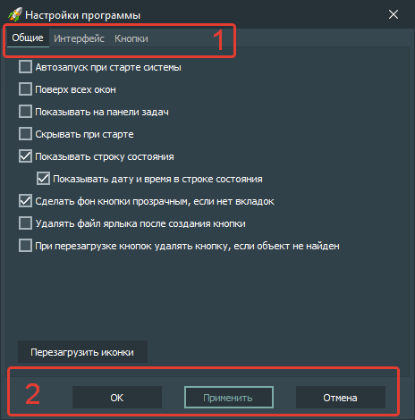

Элементы интерфейса:
-
Вкладки
-
Общие
Основные настройки приложения.
-
Интерфейс
Настройки интерфейса приложения.
-
Кнопки
Настройки стандартных значений кнопок.
-
Кнопки
-
OK
Применить изменения настроек приложения и закрыть окно настроек.
-
Применить
Применить изменение настроек приложения без закрытия окна настроек.
-
Отмена
Не применять изменение настроек приложения.
Горячие клавиши:
-
Alt + F4
После нажатия этой комбинации клавиш окно настроек приложения закрывается без применения изменений.
-
Enter
После нажатия этой клавиши настройки приложения применяются без закрытия окна настроек.
-
Ctrl + Enter
После нажатия этой комбинации клавиш окно настроек приложения закрывается с применением настроек.
-
Esc
После нажатия этой клавиши окно настроек приложения закрывается без применения изменений.